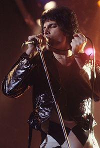
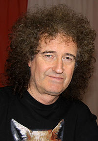
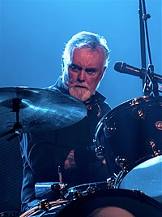
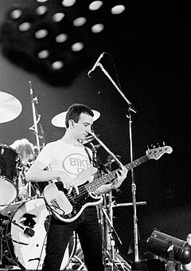

Πληροφορίες
Με τον καιρό το συγκρότημα πρόσθεσε στη μουσική του διάφορα και καινοτόμα στοιχεία, διερευνώντας την vaudeville, την ηλεκτρονική μουσική και την φανκ. Στα μέσα της δεκαετίας του '70, οι Queen άφησαν πίσω τους την progressive μουσική, δημιουργώντας κομμάτια πιο συμβατικά, με σκοπό να παιχτούν περισσότερο στο ραδιόφωνο, δίνοντας τους μεγαλύτερη εμπορική επιτυχία. Καθ’ όλη την δεκαετία του '70, οι Queen δεν χρησιμοποίησαν καθόλου συνθεσάιζερ στα άλμπουμ τους, με το μουσικό τους στιλ όμως να εξελίσσεται. Εν τέλει άρχισαν να χρησιμοποιούν συνθεσάιζερ στην δεκαετία του '80, κάτι που αντικατοπτρίζει την πειραματική τους προσέγγιση στη μουσική.
Ο Μπράιαν Μέι και ο Ρότζερ Τέιλορ έπαιζαν μαζί σε ένα συγκρότημα με το όνομα Smile. Ο Φρέντι Μέρκιουρι ήταν οπαδός του εν λόγω συγκροτήματος και τους παρότρυνε να πειραματιστούν με πιο περίτεχνες τεχνικές μουσικής ηχογράφησης. Σύντομα, ο Μέρκιουρι (που τότε ήταν γνωστός με το όνομα Φάρροκ Μπαλσάρα) προστέθηκε στην σύνθεση του συγκροτήματος και μετονομάστηκαν σε Queen, το όνομα με το οποίο έγιναν γνωστοί. O Ντίκον εντάχθηκε στο συγκρότημα πριν την ηχογράφηση του πρώτου τους δίσκου. Οι Queen γνώρισαν κάποια επιτυχία στο Ηνωμένο Βασίλειο στις αρχές της δεκαετίας του '70, αλλά ήταν με την κυκλοφορία του Sheer Heart Attack (1974) και του A Night at the Opera (1975) που έγιναν γνωστοί σε παγκόσμιο επίπεδο. Το A Night at the Opera περιείχε και το Bohemian Rhapsody, το οποίο παρέμεινε στο νούμερο ένα των βρετανικών τσαρτ για εννέα εβδομάδες. Το News of the World (1977) περιέχει τα δύο γνωστά τραγούδια We Will Rock You και We Are the Champions τα οποία έχουν χρησιμοποιηθεί σε αθλητικούς αγώνες ως ύμνοι. To The Game (1980) ήταν το πρώτο άλμπουμ των Queen που πήγε νούμερο 1 στα αμερικανικά τσαρτς, πράγμα το οποίο τους έδωσε τεράστια φήμη εκεί και παγκοσμίως.
Τα πρώτα χρόνια: 1968 – 1974
Το 1968, ο κιθαρίστας Μπράιαν Μέι, φοιτητής στο Ιμπίριαλ Κόλετζ του Λονδίνου, και ο μπασίστας Τιμ Στάφελ (Tim Staffell), αποφάσισαν να δημιουργήσουν ένα συγκρότημα. Ο Μέι είχε αναρτήσει μια αγγελία στο πανεπιστήμιο προς αναζήτηση ενός ντράμερ «τύπου Μιτς Μίτσελ/Τζίντζερ Μπέηκερ» και σύντομα προστέθηκε σε αυτούς ο Ρότζερ Τέιλορ, ένας νεαρός φοιτητής της οδοντιατρικής. Το συγκρότημα πήρε το όνομα Smile.
Ενώ φοιτούσε στο Earling Art College, ο Στάφελ έγινε φίλος με τον Φάροκ Μπαλσάρα (Farrokh Bulsara), έναν άλλο φοιτητή που συστηνόταν με το αγγλικό όνομα Φρέντι. Ο Μπαλσάρα πίστευε ότι είχε τα ίδια γούστα με το συγκρότημα και έγινε οπαδός των Smile. Στα τέλη της δεκαετίας του '60, αφότου ο Στάφελ αποχώρησε από το συγκρότημα και εντάχθηκε στους Humpy Bong, οι Smile με πρωτοβουλία του Μπαλσάρα άλλαξαν το όνομά τους σε Queen και συνέχισαν να κάνουν πρόβες. Όταν ερωτήθηκε ο Μπαλσάρα είπε «Εγώ σκέφτηκα το όνομα. Είναι απλώς ένα όνομα, αλλά είναι προφανώς βασιλοπρεπής, και ακούγεται θαυμάσια. Είναι ένα δυνατό όνομα, καθολικό και ευθύ. Βέβαια και γνώριζα τον συνδυασμό του με την ομοφυλοφιλία, όμως αυτή είναι μόνο μία από τις διαστάσεις του».
ΤΑ ΜΕΛΗ ΤΗΣ ΜΠΑΝΤΑΣ
1ο Μέλος ο Φρέντι Μέρκιουρι

Γεννήθηκε 5 Σεπτεμβρίου του 1946 στη Ζανζιβάρη. Είναι βρετανός τραγουδιστής και μουσικός .Θεωρείται ένας από τους μεγαλύτερους και πιο χαρισματικούς τραγουδιστές όλων των εποχών και είναι γνωστός για την φανταχτερή του περσόνα στη σκηνή και το τεσσάρων οκτάβων εύρος φωνής του γινε διάσημος ως τραγουδιστής, συνθέτης και πιανίστας του βρετανικού ροκ συγκροτήματος Queen. Το 1955 στάλθηκε πίσω στην Ινδία St. Peter's School, ένα αγγλικό οικοτροφείο αρρένων στο Panchgani, 250 χλμ. περίπου από τη Βομβάη. Εκεί πήρε το παρατσούκλι «Φρέντι» που θα κρατούσε για όλη του τη ζωή. Ο διευθυντής του σχολείου παρατήρησε το μουσικό ταλέντο του Φρέντι και πρότεινε στους γονείς του να κάνει μαθήματα πιάνου, πράγμα που έγινε όταν ήταν επτά ετών. Επίσης τραγουδούσε στην χορωδία του σχολείου. Στην ηλικία δώδεκα ετών προσχώρησε στο πενταμελές μουσικό συγκρότημα The Hectics το οποίο έπαιζε σε διάφορες κυρίως σχολικές εκδηλώσεις. Το 1963 επέστρεψε στη Ζανζιβάρη, η οποία στα τέλη του της χρονιάς απέκτησε την ανεξαρτησία της από το Ηνωμένο Βασίλειο. Αφού τον Ιανουάριο του 1964 ξέσπασε βίαιη επανάσταση κατά του σουλτάνου της Ζανζιβάρης ο δεκαεπτάχρονος τότε Φρέντι αναγκάστηκε να εγκαταλείψει το νησί μαζί με τους γονείς και την αδελφή του. Η οικογένεια του Μέρκιουρι εγκαταστάθηκε στο Λονδίνο, όπου ο Μέρκιουρι σπούδασε γραφιστική στο Ealing College of Art και αποφοίτησε το 1969 Μετά την αποφοίτησή του, ο Μέρκιουρι συμμετείχε σε έναν αριθμό συγκροτημάτων και πουλούσε μεταχειρισμένα ρούχα την Αγορά Κένσινγκτον στο Λονδίνο με την κοπέλα του, Μαίρη Όστιν. Επίσης, εργάστηκε ως αχθοφόρος στο Αεροδρόμιο Heathrow.
2ο Μέλος ο Μπράιαν Μέι

Γεννήθηκε 19 Ιουλίου του 1947 στο Λονδίνο. Είναι Άγγλος μουσικός, συνιδριτικό μέλος του ροκ συγκροτήματος Queen. Θεωρείται ένας από τους καλύτερους κιθαρίστες όλων των εποχών. Έγραψε το τραγούδι We Will Rock You, το οποίο είναι ένα από τα δημοφιλέστερα τραγούδια των Queen. Εκπλήσσοντας τους πάντες,ο Μπράιαν Μέι ξεκίνησε δυναμικά καριέρα αστροφυσικού, συμμετέχοντας στην ερευνητική ομάδα της NASA, με αφορμή καινούργιες εικόνες από τον Πλούτωνα, που συνέλεξε το διαστημόπλοιο New Horizons. Τον Μάιο του 1974, ο Μέι είχε εγγραφεί σε διδακτορικό πρόγραμμα του Imperial College στο Λονδίνο. Έκανε εξειδικευμένες σπουδές σχετικά με το ηλιακό σύστημα. Παράλληλα ήταν η εποχή όπου μαζί με τους Queen, γνώριζε διεθνή επιτυχία αλλά αναγκάστηκε να βάλει τις σπουδές του στην άκρη. Παρόλα αυτά αυτά σχεδόν 40 χρόνια αργότερα, το 2007 κατάφερε να διαπρέψει και στον τομέα της αστροφυσικής.
3ο Μέλος ο Ρότζερ Τέιλορ

Γεννήθηκε 26 Ιουλίου του 1946 στην Αγγλία. Ο Τέιλορ ήταν φοιτητής οδοντιατρικής, όταν είδε την αγγελία που είχαν βάλει ο κιθαρίστας Μπράιαν Μέι και ο μπασίστας Τιμ Στάφελ. Έψαχναν έναν ντράμερ για το συγκρότημά τους, «Smile». Ο Τέιλορ πέρασε από ακρόαση και έγινε μέλος του συγκροτήματος. Γνωρίστηκε με τον Φρέντι Μέρκιουριπου ήταν συμφοιτητής με τον Στάφελ στο κολλέγιο. Ο Μπουλσάρα γρήγορα έγινε μεγάλος θαυμαστής του συγκροτήματος,όταν ο Στάφελ εγκατέλειψε τους "Smile", ο Μπουλσάρα ενθάρρυνε τον Τέιλορ και τον Μέι να συνεχίσουν να παίζουν στο συγκρότημα, μόνο που ο ίδιος θα γινόταν ο τραγουδιστής τους. Ο Τέιλορ έχει γράψει πολλά γνωστά τραγούδια των Queen, όπως το «A Kind of Magic», το «I'm in Love with My Car» και το «Radio Ga Ga». Επίσης, ισχυρίζεται ότι ο Φρέντι Μέρκιουρι έγραψε μαζί του το «Innuendo», αλλά δεν υπάρχουν στοιχεία γι' αυτό.
4ο Μέλος ο Τζον Ντίκον

Γεννήθηκε 19 Αυγούστου του 1951. Είναι Άγγλος μπασίστας διάσημος ως μέλος του ροκ συγκροτήματος Queen. Όταν το συγκρότημα άρχισε να ηχογραφεί το Sheer Heart Attack, ο Ντίκον ενσωματώθηκε σε αυτό και έγραψε τα πρώτα του τραγούδια. Το Misfire, το Spread Your Wings και το You're My Best Friend έγιναν ιδιαίτερα αγαπητά στους πρώτους θαυμαστές των Queen. Μάλιστα, το You're My Best Friend είναι από τα πλέον πολυπαιγμένα στο ραδιόφωνο αγγλικά τραγούδια. Το 1980 γράφει ένα από τα διασημότερα τραγούδια των Queen, το disco κομμάτι με τίτλο Another One Bites the Dust. Το τραγούδι ανέβασε το συγκρότημα ψηλά στα τσαρτς και μπήκε, μαζί με το You're My Best Friend στο CD Greatest Hits. Επίσης αυτό το κομμάτι εμπνεύστηκε από το Good Times του disco συγκροτήματος Chic. Το 1982, στο άλμπουμ Hot Space γράφει ένα από τα χαρακτηριστικά του τραγούδια, το Back Chat. Το τραγούδι ανήκε στο είδος funk-rock και είχε στοιχεία μουσικής soul. Παρόλο που στο μουσικό βίντεο ο Μπράιαν Μέι εμφανίζεται να παίζει κιθάρα, ο Τζον Ντίκον είχε παίξει ηλεκτρική κιθάρα, μπάσο και ντραμς στην έκδοση του CD, με τον Μπράιαν Μέι να περιέχει μόνο το solo.